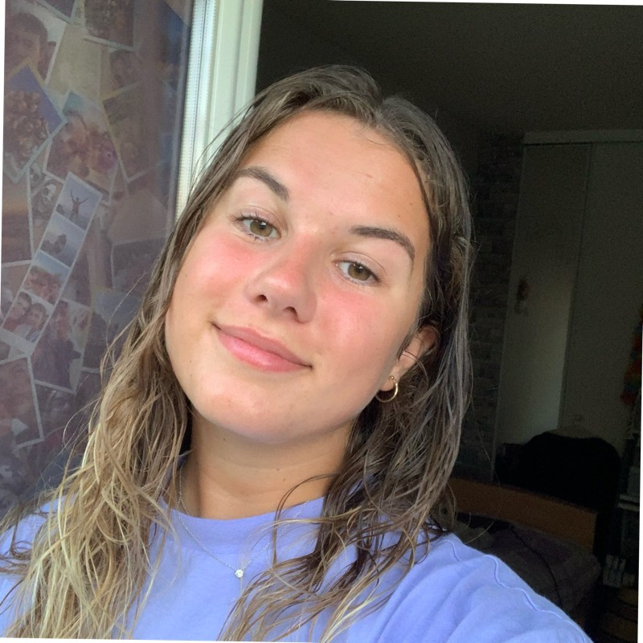

Hamdini Khaled
Etudiant en L3 Chimie
Anaïs Guillerm
Etudiante en L3 Chimie

Nous sommes quatre étudiants en licence trois de chimie à l’université Paris Saclay à Orsay.
Notre projet final de fin d’année est de réaliser un projet sur les différents procédés de fabrication du verre et Nous avons choisi de réaliser un site internet entièrement codé qui rassemble nos recherches.
L’objectif de cette Unité d’Enseignement est la réalisation d’un projet disciplinaire en équipe
en s’appuyant sur les principes pédagogiques de développement des soft skills.
ce sont des
compétences non disciplinaires telles que des compétences comportementales, de savoirêtre.